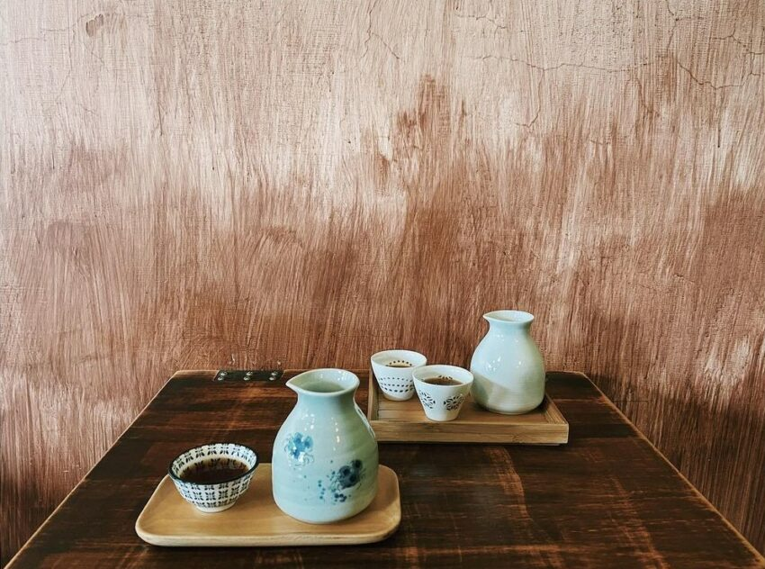

黛西堂是一間很特別的咖啡店，店內就有近二十幾款的咖啡豆，還有一整面牆擺放著煮咖啡的器具。
除了販賣咖啡豆，黛西堂當然也能品嘗老闆的咖啡好手藝，還可以親自體驗手沖咖啡的樂趣，而且價格也不貴。
老闆也也很喜歡和客人交流咖啡的知識，是個閒暇時放鬆休息的好地方。
地址：高雄市鳳山區新富路182號
營業時間：12:00–18:00 (週日休息)

高雄美食介紹 高雄美食｜早餐、早午餐 高雄美食｜美食小吃 高雄美食｜消夜、宵夜 期末心得
練習用音樂、影片
your drowser does not support the audio element.